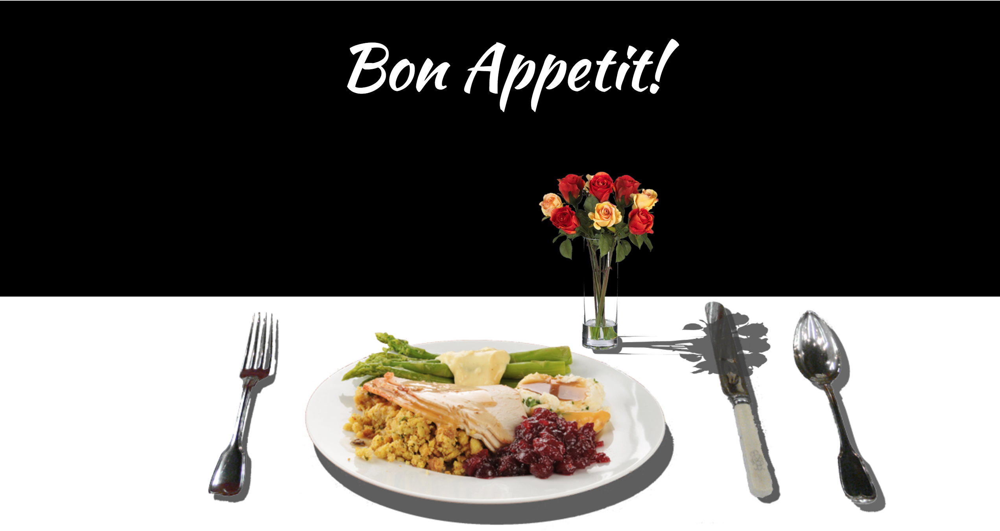

The goal of this handson is to build on a few past concepts, while building familiarity with CSS positioning and z-indexes.
At the end of this hands-on, you should have something like this:
Open up your the HTML and CSS in the starter-files folder. Observe how the divs in the HTML file are structured, and which classes you can work with in the CSS. Some things to keep in mind as you get started:
- You will want to primarily use position: absolute; and position: relative; (maybe even position: fixed;) with the top, bottom, left, and right properties in order to position items.
- We want the table to be positioned on the very bottom of the page, and to be behind all the elements.
- As observed in the picture, we want certain elements to be more in the foreground and other elements (like the vase of flowers) to be more in the background, based on our depth perception and the elements' relative sizes.
- Is there an easy way to get the utensils and plate of food to line up next to each other?
- A suggestion: sometimes it helps to outline your divs (especially container divs) to see how other divs are positioned relative to these divs!
Good luck!
Note that there are many different solutions in how you can achieve the same positioning result; so when you're finished, go back and see if there are simpler ways to position the elements without writing a lot of code!
When you're finished, take a look at the solutions file and compare your answers. You should now hopefully have a better conceptual knowledge on how to position items on a page!